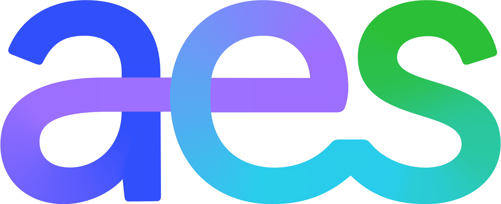
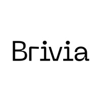
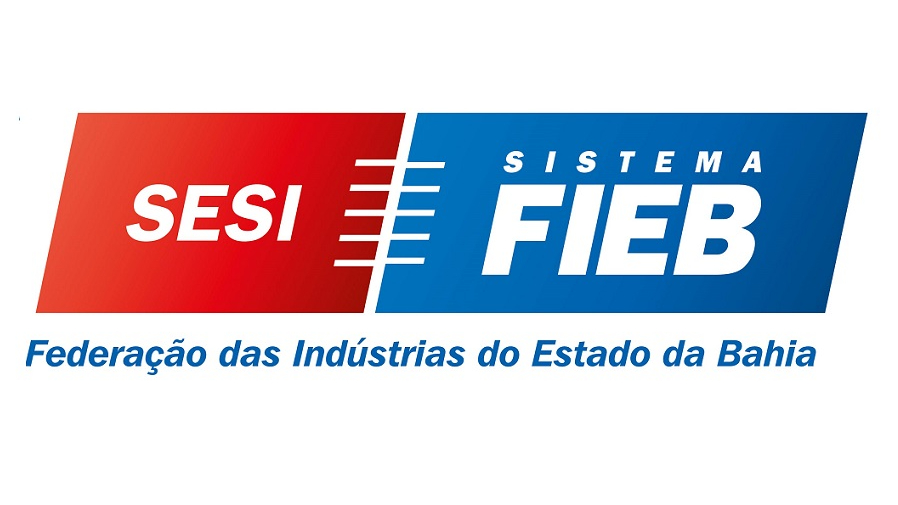
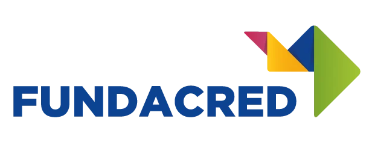
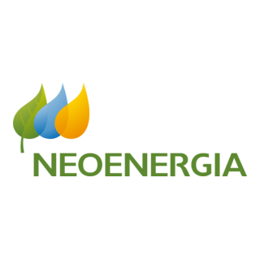

⚙
Automação de Rotinas
- Identificação de processos passíveis de automação
- Desenvolvimento de scripts (Python, PowerShell)
- Testes, validação e documentação
- Treinamento dos usuários finais
Consultoria especializada em desenvolvimento de software, automação, monitoramento e infraestrutura — entregando valor real ao seu negócio.
A RI Tecnologia é uma empresa especializada em consultoria e desenvolvimento de soluções tecnológicas, atuando há mais de 4 anos no mercado com o objetivo de apoiar empresas na transformação digital.
Nosso foco está em entregar soluções robustas, escaláveis e seguras, alinhadas às necessidades estratégicas de cada cliente — desde a fase de discovery até a sustentação em ambiente produtivo.
Apoiar a transformação digital com qualidade técnica e geração de valor real para o negócio.
Soluções completas para impulsionar a transformação digital do seu negócio.
Definição de escopo com stakeholders e levantamento funcional completo.
Escolha da stack adequada ao contexto, incluindo ferramentas Microsoft (PowerApps).
Boas práticas de engenharia: front-end, back-end e integrações.
Unitários, integração e aceitação — implantação em produção com suporte pós-go-live.
Levantamento de requisitos e definição inicial do escopo da solução.
Estruturação do backlog e priorização de entregas com o cliente.
Ciclos curtos de 2–3 semanas com entregas incrementais e validação contínua.
Entregas ao final de cada ciclo com validação pelos stakeholders.
Sprint Planning · Daily Meeting · Sprint Review · Sprint Retrospective
Time full-cycle com expertise completa em todas as jornadas do projeto.
Reuniões diárias (Daily) para alinhamento e visibilidade contínua das atividades.
Ciclos quinzenais com entrega de melhorias contínuas implementadas e validadas.
Visibilidade total das atividades de cada sprint com acompanhamento em tempo real.
Ao longo de sua trajetória, a RI Tecnologia tem atuado em projetos relevantes junto a empresas e instituições de diferentes segmentos, contribuindo para o desenvolvimento de soluções tecnológicas que apoiam a transformação digital.





Estamos à disposição para alinhar os detalhes, esclarecer dúvidas e formalizar o início da parceria.
Alinhamento inicial
Definição de escopo
Kick-off do projeto